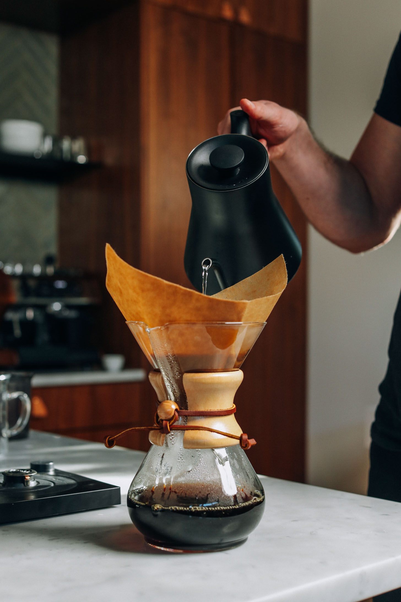
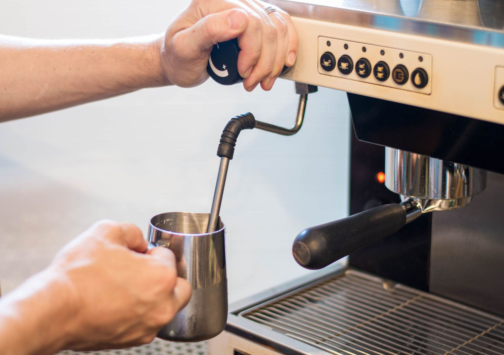

Coffee Equipment
Nespresso Cofee Machines are easy to use, no need to ground coffee beans our worry about a even pour. Just by pods with coffee beans that fit your personal taste and pop them into the machine!

Drip Coffee Machines will require ground coffee beans. you put them in a filter in the machine and wait for the coffee to slowly drip into your cup or pot!
Pour Over devices are the same concept as drip coffee but a little more manual. You will put coffee ground in a filter and manually pour hot water over the grounds, controlling the strength of your coffee!

French Press machines are easy to use. Add hot water and desired coffee grounds into the press and put the lid on. Wait for the coffee to brew for 3-4 minutes and then press down to filter the grounds from the coffee!

Moka Pots are a little harder to use properly. Add water into the bottom chamber and Coffee grounds into the funnel. Put the pot together and place on heat. Wait for the coffee to start rising into the top chamber and then pour!

For a real cafe experience, Espresso Machines are best. Ground coffee beans into portafilter and press. Put into the machine and wait for an espresso shot to be pulled. Make latte art, lattes or espresso shots from your home!
Milk Equipment

Milk Frother are very versatile. You can froth milk, mix matcha, or create cool design in your cup!
Steaming Milk Wands are used to make steamed milk. This milk can be used for latte art with an espresso shot or as is for kids!
Bean Grinders

Coffee Grinder Machines will grind your coffee beans to a fine grind with ease! No need to struggle or take a lot of time to grind the beans

Manual Coffee Grinders will take a bit more work but are said to bring out the aroma of the coffee grounds better! You can also customize the size of your ground depending on what type of coffee method you are using or your preference!